Email Postmortem Analysis¶
Introduction¶
In the context of cybersecurity and digital forensic analysis, the study of email headers is a key technique used to verify the authenticity of a message, identify possible manipulations, and trace its origin. Headers contain fundamental metadata documenting the route followed by the message through different mail servers, as well as information about the sender identity and message integrity.
During a postmortem analysis of a device, it is common to work with different email storage formats, each associated with different email clients. Among the most common are:
PST (Personal Storage Table) and OST (Offline Storage Table): used by Microsoft Outlook to locally store emails (PST) or to work offline (OST).
MBOX: a generic format used by clients such as Mozilla Thunderbird, Apple Mail, or Eudora.
EML and MSG: formats where each file represents a single email message. Common in Outlook Express and Outlook, respectively.
DBX and MBX: used by older versions of Outlook Express and Eudora.
NSF (Notes Storage Facility): used by IBM Lotus Notes to store emails, calendars, and other data.
Beyond format decoding, the technical analysis focuses on validating authentication mechanisms such as SPF (Sender Policy Framework), which verifies whether the sending server is authorized by the domain; DKIM (DomainKeys Identified Mail), which checks whether the message content has been altered; and DMARC (Domain-based Message Authentication, Reporting and Conformance), which establishes policies for handling unauthenticated messages.
Understanding these elements is essential for detecting fraud such as phishing, protecting corporate infrastructures, and reinforcing trust in email communications. This practice aims to familiarize students with the structure of email headers and the different formats in which an email can be stored, as well as the methods used to authenticate its legitimacy.
Objectives¶
Determine the authenticity of emails.
Decode different email storage formats.
Tasks¶
1) Analyze manually the headers of the emails 1.eml to 4.eml. Justify whether there is absolute certainty about their authenticity or whether there are any doubts regarding it.Finally, verify the headers using a tool similar to: https://mxtoolbox.com/. If any discrepancy appears between your analysis and the tool’s analysis, justify the reason for it.
Email 1¶
Open the first .eml file using a compatible email client or a text editor.
Inspect the following elements:
Sender address
Recipient address
Subject
Date
ReceivedheadersSPF validation
DKIM validation
DMARC validation
Sending infrastructure
Check whether the sender domain matches the servers that handled the email.
Write down any suspicious indicators or any signs that suggest the email is legitimate.
Image placeholder.
Manual Analysis¶
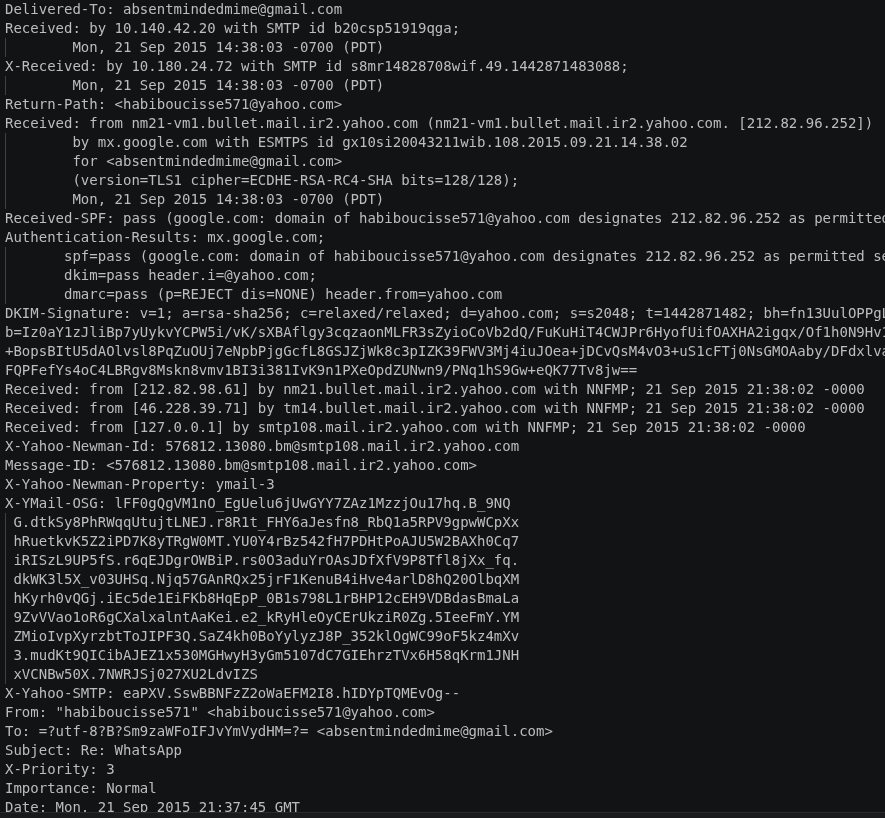
Automated Analysis¶
Use an online tool such as:
https://mxtoolbox.com/
https://toolbox.googleapps.com/apps/messageheader/
Compare the automated results with your manual investigation.

Email 2¶
Repeat the same process with the second email.
Pay special attention to:
Missing DKIM signatures
SPF failures or neutral results
Spam indicators
Exchange or Outlook routing information
Suspicious sender infrastructure
Image placeholder.
Manual Analysis¶
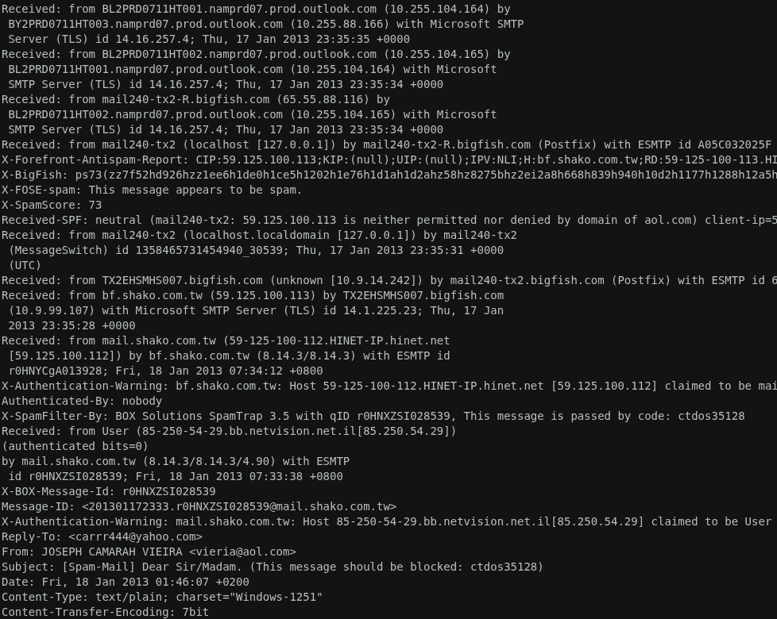
Automated Analysis¶
Compare your conclusions against the online analysis tool.
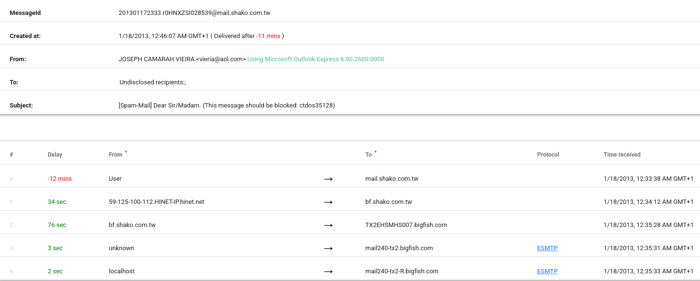
Email 3¶
Inspect the email headers and authentication mechanisms.
Verify whether:
SPF passes correctly
DKIM signatures exist
DMARC validation succeeds
Routing information appears legitimate
Attachments are referenced
Image placeholder.
Manual Analysis¶
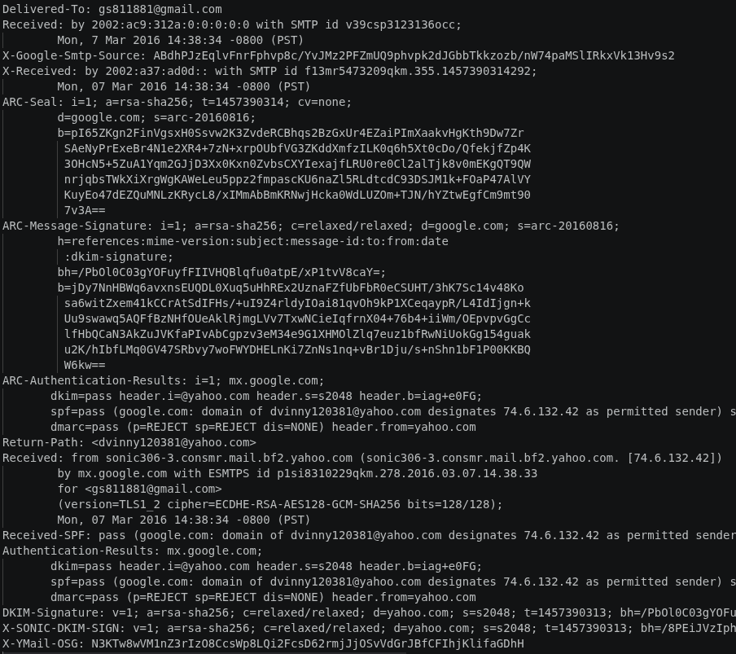
Automated Analysis¶
Analyze the email using the selected header analysis platform.
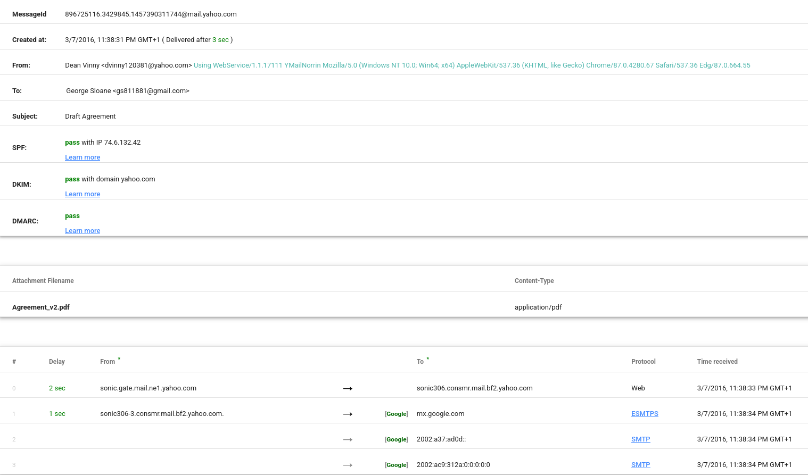
Email 4¶
Analyze the final email carefully.
Potential suspicious indicators may include:
Strange sender domains
SPF softfail or fail
Missing DKIM
Unauthorized sending IPs
Suspicious routing paths
Rejected authentication attempts
Image placeholder.
Manual Analysis¶
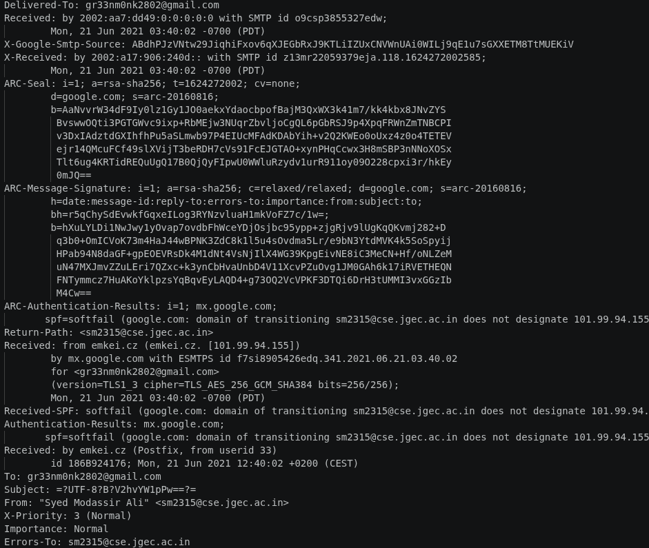
Automated Analysis¶
Compare your manual analysis with the automated results.
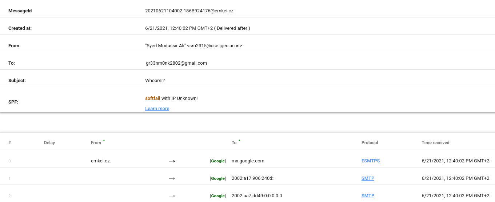
2) Imagine that during a forensic postmortem analysis of a disk image you extracted different forensic artifacts with PST and MBOX extensions. Investigate which applications, preferably open source, can be used to access their contents.
PST Files¶
Research applications capable of opening .pst files.
Possible tools:
Microsoft Outlook
XstReader
LibPST
readpst
For each tool, investigate:
Installation process
Supported formats
Whether it is open source
Main forensic usefulness
Image placeholder.
Notes and Observations¶
https://apps.microsoft.com/detail/9nrd5bnb4tnl?hl=es-ES&gl=ES
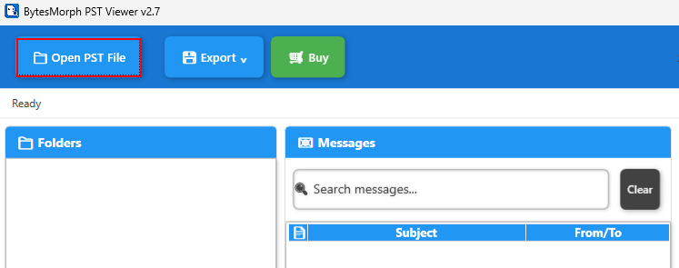
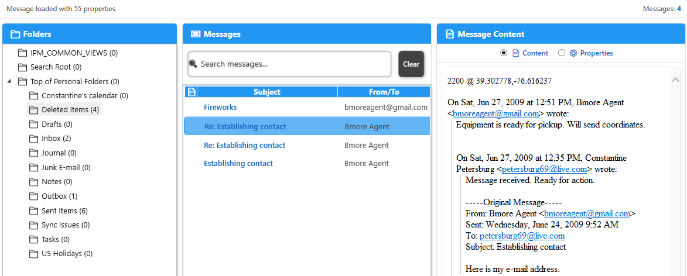
MBOX Files¶
Research tools capable of reading .mbox files.
Possible tools:
Thunderbird
Mbox Viewer
Aid4Mail
Autopsy

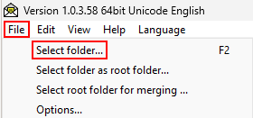
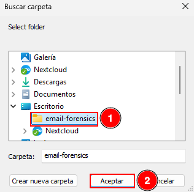
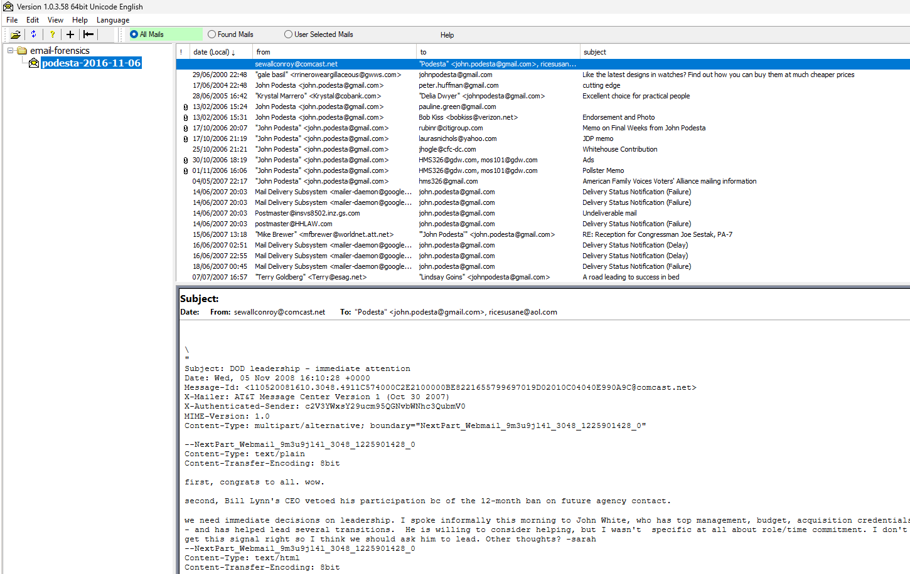
Notes and Observations¶
Conclusions¶
Summarize which tools are most useful during forensic investigations and compare PST vs MBOX accessibility.
3) Locate the DBX, MBX, or MBOX databases from exercise 3 of practice 1. Copy them to another directory and use the tools from the previous section, or any additional tools you may need, to visualize the content of the emails stored in those files.
Thunderbird Email Storage¶
Locate the Thunderbird profile directory.
Possible paths:
Windows:
C:\Users\<USER>\AppData\Roaming\Thunderbird\Profiles\
Interesting directories:
MailImapMailLocal Folders
Identify possible forensic artifacts such as:
Inbox
Sent
Trash
Drafts
MBOX files

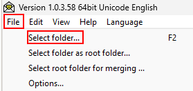


Observations¶
Outlook Email Storage¶
Locate Outlook storage files.
Possible paths:
C:\Users\<USER>\AppData\Local\Microsoft\Outlook\
or
C:\Users\<USER>\AppData\Local\Microsoft\Olk\
Possible forensic artifacts:
PST files
OST files
Cached metadata
Log files
Image placeholder.
Observations¶
Copying the Artifacts¶
Create a separate directory for analysis and copy the identified files.
Try to preserve timestamps and avoid modifying the original evidence.
Image placeholder.
Procedure Followed¶
Visualizing the Emails¶
Use the tools researched in the previous exercise to open and inspect the files.
Possible tools:
Thunderbird
Mbox Viewer
XstReader
Outlook
Check whether you can:
Read emails
Access attachments
Recover folder structures
View metadata
Image placeholder.
Results Obtained¶
Final Conclusions¶
Summarize the results obtained during the forensic analysis.